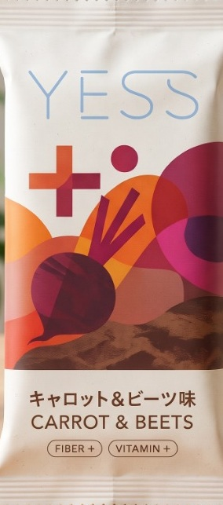
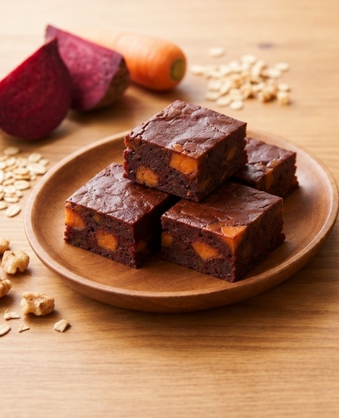
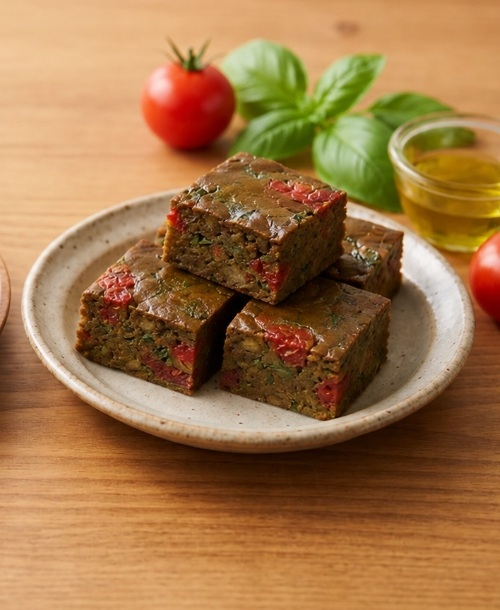
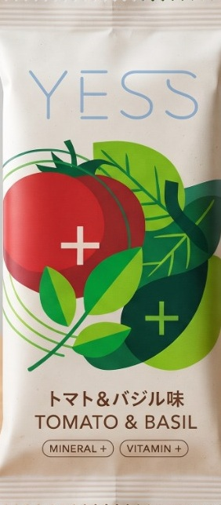

キャロット＆ビーツ味
15:00チョコや焼き菓子に手が伸びる時間に
人参のやさしい甘みとビーツの深いコク。午後に甘いものが欲しくなったとき、チョコや焼き菓子の代わりに。
- Fiber +
- Vitamin +
¥3201袋（税込）
一袋でサラダ1杯相当。野菜由来の栄養を、普段の間食から。
デスクの引き出しに入れておけば、仕事の手を止めずに片手でつまめます。
左右にドラッグで回転、タップで手前に
※ パッケージ画像は開発中の商品イメージです。仕様・デザインは変更になる場合があります。
フォークもドレッシングも不要。一般的な栄養バー（約30g前後）の約2倍にあたる60g・8粒入りなので、デスクで少しずつ食べてしっかり小腹を満たせます。


※ 掲載の中身および盛り付け写真は開発中の商品イメージです。実際の製品とは色味・形状等が異なる場合があります。
要冷蔵でかさばり、フォークとドレッシングを出すたびに作業が止まる。容器のゴミも毎回出る。
栄養は補えても、小腹は満たされない。水で流し込むだけで、食べた実感がない。
デスクでつまみやすいけれど、野菜は摂れない。食べ終わったあとに後ろめたさが残る。
YESSは、お菓子の手軽さで野菜を摂るための一口バーです。
デスクワークで間食が欲しくなる2つの時間帯に合わせて、甘い系と食事系を用意しました。

15:00チョコや焼き菓子に手が伸びる時間に
人参のやさしい甘みとビーツの深いコク。午後に甘いものが欲しくなったとき、チョコや焼き菓子の代わりに。
¥3201袋（税込）

19:30スナック菓子が恋しい残業中に
完熟トマトの旨みとバジルの爽やかな香り。甘くない間食が欲しい夜の作業や、昼食が軽かった日の一品に。
¥3201袋（税込）
※ 掲載のパッケージ画像は開発中の商品イメージです。
1袋からの単品購入も、2種類の組み合わせも自由です。現在は開発中のため、このページでの決済・ご請求は一切行われません。
8粒入り（一般的な栄養バーの約2倍量）｜Fiber + / Vitamin +
8粒入り（一般的な栄養バーの約2倍量）｜Mineral + / Vitamin +
合計8袋以上のため「5%オフ ＋ 送料無料」が適用されています（あと8袋追加で10%オフ）。
※ アレルギー物質（特定原材料等28品目・予定）：乳成分・卵・大豆
1袋あたり60g（指でつまんで一口で食べられる角切りサイズが8粒入り）です。2〜3口で終わらず、デスクワークの合間に少しずつ食べ切れるボリュームを想定しています。
1袋に使う野菜の量（生の状態に換算）が、一般的なカップサラダ1食分と同程度になるよう配合を設計しています。具体的なグラム数は仕様確定時に表示します。
表面に油分や粉が残りにくい焼き上げを目指して試作しています。ドレッシングのような汁気もありません。
このページでは決済・お支払いは一切行われません。こちらは開発中の「仮購入」受付です。開発・製造が完了した段階で、ご登録いただいた方へ改めて本品のアナウンスと、正式なご購入意思の確認をお送りします。
本品に含まれる予定のアレルギー物質（特定原材料等28品目対象）は「乳成分・卵・大豆」です。詳細な全原材料および栄養成分表示の確定内容は、製品化後の本品ご案内および販売ページにて明記いたします。
お選びいただきありがとうございます。このページ上で決済や請求が発生することは一切ありません。
製品の開発・製造が完了しだい、ご登録のメールアドレス宛に本品のご案内と、正式にご購入されるかの確認メールをお送りします。
このサイト上での決済・請求は一切発生していません。製品開発が完了次第、ご登録のメールアドレスへ本品のご案内と、改めての購入意思確認メールをお送りします。
YESS プロジェクト（学生開発チーム）（以下「当チーム」）は、本ページにおける仮購入テストおよび先行案内の受付に際し、お客様の個人情報を以下のとおり適切に取り扱います。
法令に基づく場合を除き、ご本人の同意なくお預かりした個人情報を第三者へ開示・提供することはありません。
ご入力いただいた情報はアクセス制限を設けたクラウド環境（Googleスプレッドシート等）にて適切に管理します。また、本ページの利用状況把握のためブラウザのローカルストレージ等を利用します。
ご登録いただいたメールアドレスの削除（配信停止）や内容の確認をご希望の場合は、下記窓口までご連絡ください。
運営主体：YESS プロジェクト（学生開発チーム）
運営責任者：YESS プロジェクト準備室 製品開発責任者
お問合せ窓口：yongdujiateng22@gmail.com